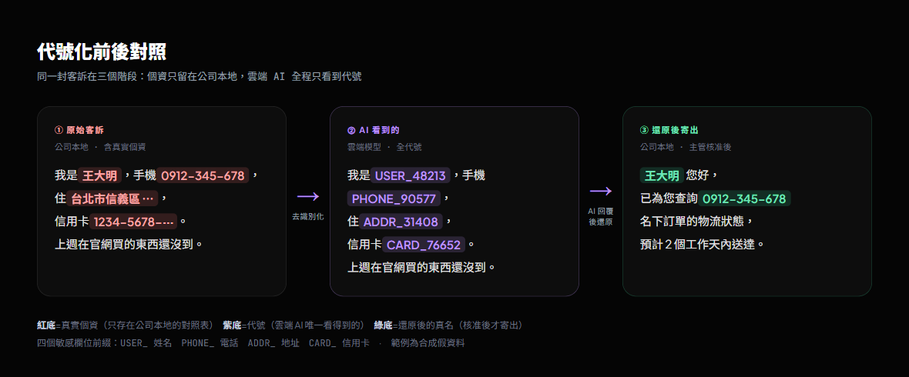

國立臺灣科技大學 AI 課程的資安架構專題。題目是做一條客戶來信自動處理流程：讀進客戶寄來的信，交給 AI 生成回覆草稿，再寄回給客戶。難點在於來信裡塞滿真實個資（姓名、電話、地址、信用卡號），而這些資料一旦進到雲端 AI 模型就等於外流。整個系統的核心，是讓 AI 全程只看得到代號，看不到任何一個人的真名與號碼。
一封真實的客戶來信長這樣：「我是王大明，手機 0912-345-678，上週在你們官網買的東西到現在還沒到。」要請 AI 幫忙寫回覆，就得把整封信丟給模型。問題是模型跑在雲端，這封信一送出去，王大明的姓名跟手機就離開了公司能控制的範圍。這個專題的做法是：寄出去之前，先把「王大明」換成 USER_48213、把手機換成 PHONE_90577，AI 看到的是代號版來信，寫出來的也是代號版回覆，最後在公司這端把代號換回真名才寄給客戶。

# 任務規格
- 輸入 — 一份 500 筆的客戶來信資料表，每筆 7 個欄位（id、姓名、電話、地址、信用卡號、分類、來信內文），其中內文是自由文字，個資會散落在句子裡。
- 處理 — 對每一筆來信去識別化 → 交 AI 生成回覆草稿 → 驗證代號完整 → 還原真實個資 → 進主管審核 → 核准後寄出。
- 輸出 — 一份三工作表的 Excel 報表（處理結果、代號對照表、批次資訊），給主管逐筆核閱後決定哪些可以寄。
- 安全底線 — AI 端全程只接觸代號；真實個資只存在公司本地的對照表與還原後報表，這兩者都排除在版本庫之外。
# 核心流程：四階段 pipeline
讀檔 + 去識別化
從 Excel 讀進來信，把四個敏感欄位掃出來，逐一替換成代號，同時把「代號 → 真值」記進一張對照表。AI 拿到的只剩代號版內文。
AI 生成 + 驗證還原
AI 讀代號版來信、寫代號版回覆。系統檢查回覆裡的代號格式與來源是否合法，通過後才用對照表把代號換回真值，交給主管。
四個敏感欄位各有固定的代號前綴，讓主管掃一眼就知道被遮掉的是什麼類型的資料：
| 欄位 | 代號前綴 | 範例 |
|---|---|---|
| 姓名 | USER_ | USER_48213 |
| 電話 | PHONE_ | PHONE_90577 |
| 地址 | ADDR_ | ADDR_31408 |
| 信用卡號 | CARD_ | CARD_76652 |
# 代號雙策略：Legacy 與 HMAC
系統提供兩種產代號的方式。Legacy 模式用「前綴 + 五位數」當代號，可讀、demo 時好對照。HMAC 模式把真值經過 HMAC-SHA256 雜湊後取十六進位字串，用來防範字典反推。
| 策略 | 設計 |
|---|---|
| Legacy | PREFIX_#####，五位數隨機整數。可讀性高，適合 demo 與主管核對。 |
| HMAC | PREFIX_XXXXXX，由 HMAC-SHA256(金鑰, 真值 ‖ 批次鹽) 取六位十六進位，共 16⁶ 種空間。金鑰至少 32 字，批次之間用不同的鹽（salt）隔離。 |
純隨機代號擋得住「看到代號猜出真值」，擋不住「同一個值每次都產出同樣代號」帶來的關聯分析。HMAC 把金鑰綁進雜湊，外部沒有金鑰就推不回去；批次鹽則讓同一筆資料在不同批次拿到不同代號，跨批次無法對齊比對。金鑰與還原後的個資都放在本地 .env 與 reports/，由 .gitignore 擋在版本庫外。
# 跨批次隔離
代號的隔離單位是「批次」。系統把來信依分類分批處理，每一批用一組獨立的鹽（salt）產代號。同一個值在不同批次會拿到不同代號，跨批次無法對齊比對；同一客戶在同一批次內維持同一個代號，方便主管在那批裡辨識同一個人。即使某一批的對照表外洩，也無法拿去解其他批次裡同一個人的身分。
# 驗證迴圈與人工佇列
AI 生成的回覆會經過一道代號驗證。驗證器先做嚴格格式檢查（規則是 ^[A-Z]+_[0-9]{5}$，白話說就是「大寫字母＋底線＋五位數字」這種長相，例如 USER_48213），攔下格式跑掉的代號；再拿對照表比對，攔下任何對照表裡查無此項、來路不明的代號。
驗證沒過時，pipeline 會把同一筆退回 AI 重生成，上限三次。三次仍然過不了的，系統把它標成 MANUAL_REVIEW 推進人工佇列（FR-23），交給人去看。重試這層邏輯寫在 pipeline，用規則判斷該不該重來，AI 只負責生成回覆內容本身。
# 殘餘個資的第二層防線
第一層的欄位替換處理的是表格欄位裡的個資。來信內文是自由文字，個資也可能藏在句子當中（例如客戶順手提到第三人的名字與電話）。pii_detector.py 用一組 regex 當第二層防線，掃描去識別化之後仍殘留的疑似個資，標上 AUTO_ 前綴交人覆核。把偵測定位成第二層保險、把欄位替換當主要能力，是這個專案 2026 年 4 月強化階段定下的架構決策。
# demo 階段先補的工程加固
- 寄信預設 dry-run —
mailer.py預設不真的寄出，加--real才會真寄；SMTP 連線加timeout=10，避免 demo 當下卡死在連不上的郵件主機。 - 讀檔編碼容錯 —
data_loader.py依序嘗試 utf-8 / utf-8-sig / big5 / cp950 四種編碼，處理台灣常見的中文 Excel 編碼差異。 - 兩階段核准 — AI 草稿先進報表等主管核可，
send_approved.py只讀報表裡標 APPROVED 的列來寄，把「生成」與「寄出」拆成兩個需要人點頭的步驟。 - 真實 / 模擬可切換 —
ai_client.py用一個開關在真實 API 與模擬輸出之間切換，沒有金鑰時也能跑完整條 pipeline 做測試；system prompt 明寫代號不可推測。
# 技術棧
- 語言 / 主要套件 — Python、pandas、openpyxl、（選填）OpenAI SDK、python-dotenv
- 去識別化 — HMAC-SHA256 雙策略代號（Legacy / HMAC）+ 批次鹽隔離
- 模組結構 — 13 個 src 模組（含 anon_db、classifier、pipeline、validator、pii_detector、mailer、data_loader、ai_client、report、send_approved 等）
- 測試 — 28 個 pytest 測試
- 文件 — PRD / SRS / SDD / TDD 規格書 + 設計報告
- 假資料 — 500 筆 × 7 欄的合成客戶來信（真實個資不入庫）
# Links
MIT License